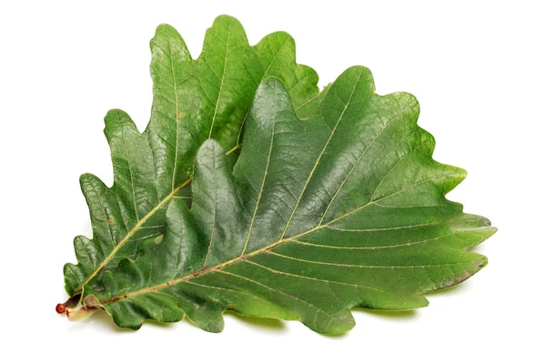
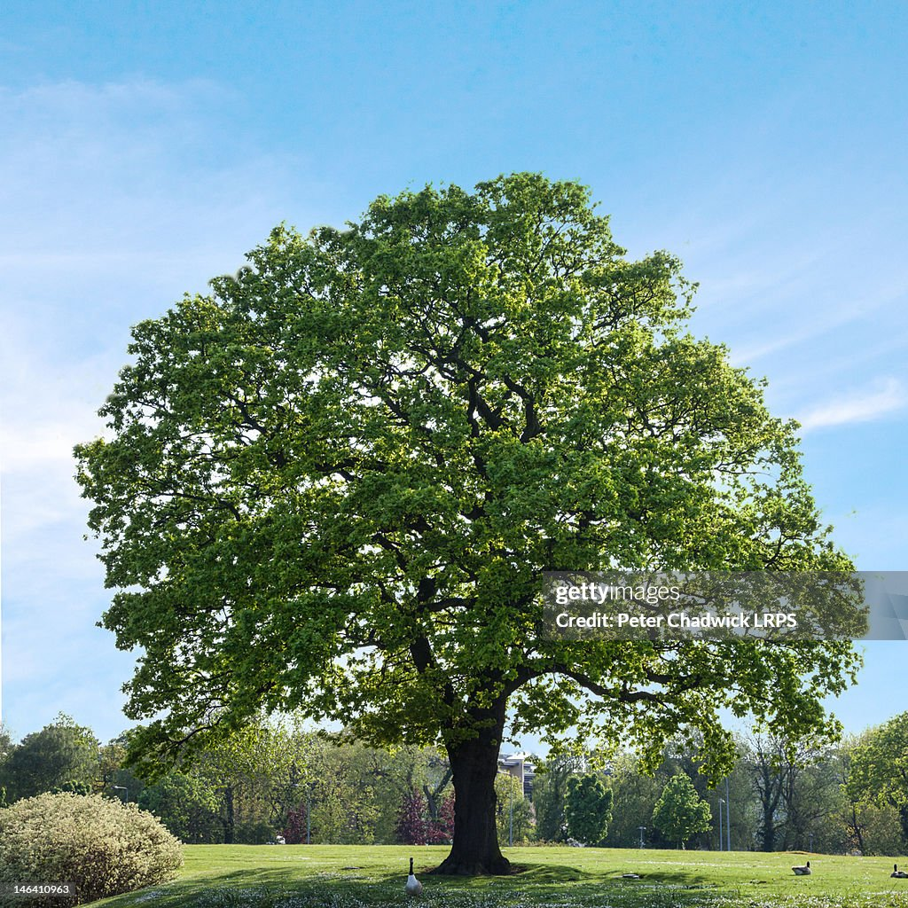

Дуб (лат. Quercus) — рід листяних та вічнозелених дерев і чагарників родини букових, що налічує понад 600 видів, поширених переважно у Північній півкулі. В Україні найчастіше трапляється дуб звичайний (Quercus robur), який формує цілі діброви та є одним із символів українського лісу.
Дуб — одне з найпотужніших і найдовговічніших дерев помірного поясу, яке може жити понад п'ятсот років, а в окремих випадках і значно довше. Висота дорослого дерева сягає 30–40 метрів, а стовбур у товщину може перевищувати два метри. Коренева система дуба дуже потужна й розгалужена, завдяки чому дерево стійке до вітровалів і посух, а глибокий стрижневий корінь дозволяє діставати вологу навіть у посушливі періоди.
Деревина дуба цінується за високу міцність та гарну текстуру, тому її широко використовують у меблевому виробництві та будівництві. З неї виготовляють паркет, бочки для витримки вина й коньяку, корабельні конструкції та елітні меблі. Кора дуба містить дубильні речовини, які здавна застосовували у шкіряній промисловості та народній медицині для виготовлення в'яжучих і протизапальних засобів.
Жолуді дуба є важливим джерелом їжі для багатьох диких тварин, зокрема кабанів, білок та птахів, що мешкають у листяних лісах. Один дорослий дуб здатний давати врожай у кілька тисяч жолудів щороку, причому плодоносити дерево починає лише з 20–50 років залежно від умов зростання. Дубові ліси (діброви) відіграють важливу роль в екосистемі: вони очищують повітря, запобігають ерозії ґрунту та є домівкою для сотень видів комах, птахів і ссавців.